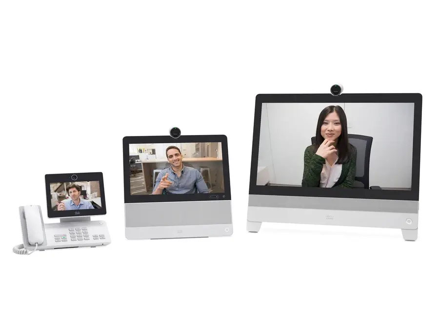

Настольные решения
Серия Cisco Webex Desk – это настольные устройства вида «все-в-одном» для быстрой организации видеоконференцсвязи дома и на рабочем месте. Устройства этой серии включают большой экран, HD-камеру, встроенный микрофон и громкоговорители, а также возможность подключения внешней гарнитуры или видеокамеры. Серия Desk идеальна для удаленных сотрудников, а также для небольших офисов, когда требуется быстро организовать видеоконференцию для одного-двух человек. Серия Desk полностью совместима с другими решениями Cisco.